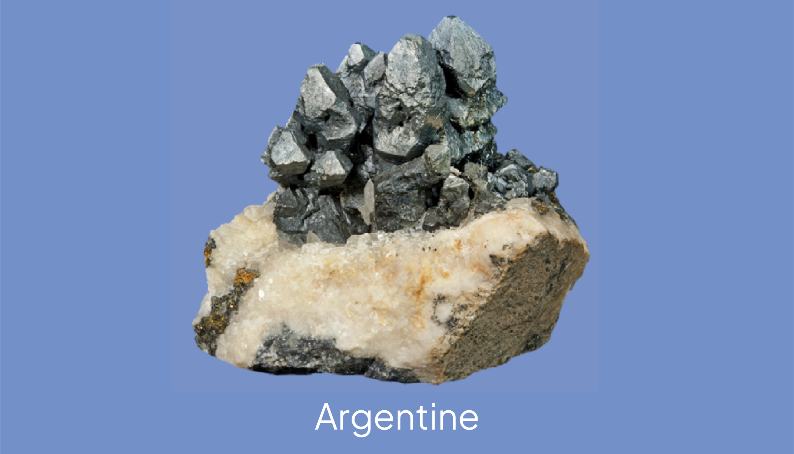
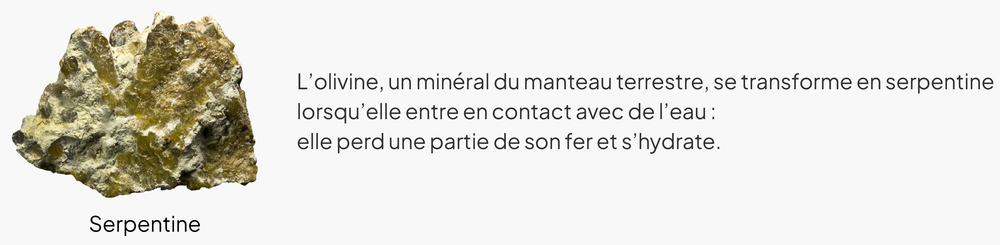
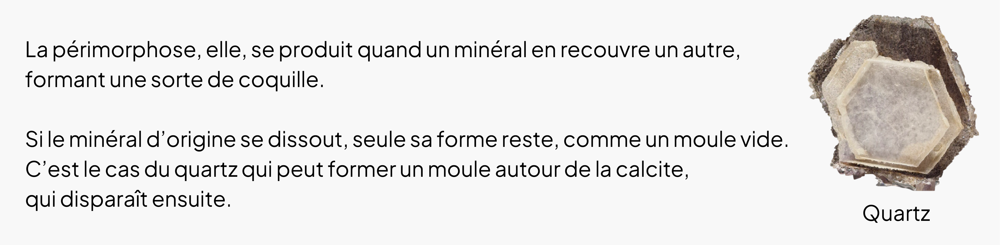
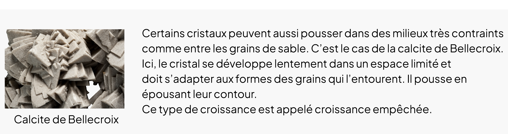
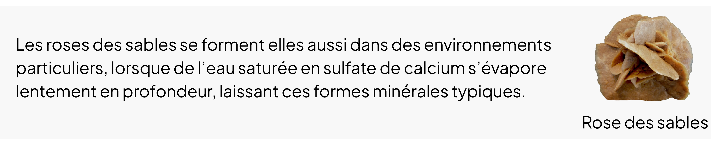

• D’un minéral à l’autre
Paramorphose
Le terme paramorphose est utilisé pour décrire la forme d’un minéral, issu d’un autre minéral de même composition chimique, mais d’arrangement atomique différent (de structure différente). Cela peut se vérifier à la suite d’un changement rapide des conditions de température et/ou pression.
C’est ce qu’on appelle une transition de phase solide-solide. Le nouveau minéral garde la même morphologie que celle du précédent, même si, microscopiquement, sa structure a changé.
Paramorphose du quartz
Le quartz adopte une structure hexagonale (quartz-bêta), au-dessus de 573 °C, et en-dessous de cette température, le quartz sera de structure trigonale (quartz-alpha). Cette transformation est rapide et réversible. Le quartz-béta ne peut exister dans des conditions ordinaires.

Paramorphose de l’argentite
L’argentite (Ag2S) change de forme pour devenir cubique à 177°C. En-dessous de cette température, ce cristal est monoclinique et prend le nom d’acanthite. Les conditions de formations de l’Ag2S sont généralement à des températures inférieures à 177°C, les formes d’acanthite sont donc rares.

• D’un minéral à l’autre
Pseudomorphose et périmorphose des minéraux
Un minéral peut changer de composition chimique sous l’effet de son environnement, tout en conservant sa forme d’origine : c’est ce qu’on appelle la pseudomorphose. Ce phénomène se produit souvent par oxydation : par exemple, la pyrite ou la sidérite peuvent s’oxyder et devenir des oxydes de fer, tout en gardant leur forme cristalline initiale.
D’autres transformations peuvent avoir lieu en présence de gaz carbonique, dissous dans l’eau : la cuprite se transforme alors en malachite, sous l’action de l’acide carbonique. En présence d’oxygène, cette même cuprite peut devenir du cuivre natif.



